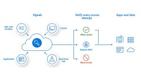

test


Kurznachrichten
Hauptversammlung 2023
Blog | 12. September 2023 16:25
INOSOFT Blog: Die Kommentarfunktion ist freigeschaltet.
Ticker | 22. August 2023 10:45
Thema dieses Artikels ist ein Projekt, bei dem unser Kunde seine bestehende on premise Multi-Faktor...
Ticker 08. August 2023 12:30
J.P.Morgan-Lauf: Dieses großartige Foto kam gestern per Facebook reingeflogen
Blog | 03. Juli 2023 12:25

Wie wichtig ein aufgeräumter Arbeitsplatz ist? Genau diese Frage behandelt die Studie XYZ des TIM-Instituts:
Ticker | 29. Juni 08:30
Neuigkeiten

INOSOFT: Herman stellt aus
13. Juli 2023

INOSOFT Team auf Developer Week
06. Juli 2023
WeeklyTalk
Über Fakten, Taxonomien, Ontologien und KI
13. Juli 2023
Retro IT Technik
06. Juli 2023
WeeklyTalk - Der INOSOFT Video Podcast
Wir sprechen über Themen der Digitalisierung und interessante Aspekte aus unseren Projekten.
Thema der nächsten Sendung am Donnerstag, 21. September um 16:00 Uhr:

Über 3000 Projekte haben wir in den letzten Jahren erfolgreich konzipiert, umgesetzt und betreut.
Experience you can trust. Service you can count on.
Beruf&Familie
Unser Geschenk zum 800. Geburtstag der Stadt Marburg